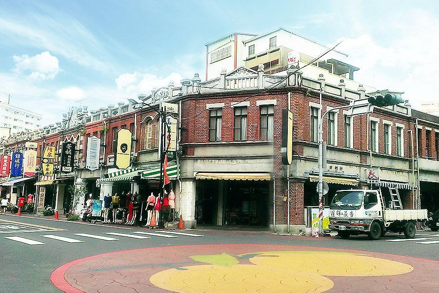

關於台灣
台灣是位於東亞的島嶼國家。以其美麗的風景、豐富的文化和美食聞名。
探索台灣的奇蹟
台灣是全球旅遊者和遊客的熱門目的地。憑藉其多樣化的景點和活動，總有新的刺激和驚喜等待著您的發現。
- 首都： 台北
- 語言： 普通話、閩南語、客語和原住民語言
- 貨幣： 新台幣（NTD）
- 人口： 2350萬
- 面積： 36,197平方公里
- 氣候： 熱帶和亞熱帶
- 時區： UTC+8
- 互聯網頂級域： .tw
台灣是一個充滿對比的國家，擁有繁華的城市、宜人的山脈和迷人的海灘。台灣人友善好客，飲食文化則融合了中國、日本和原住民的美食。從在台北的 夜市和寺廟中尋覓樂趣，到在太魯閣峽谷遠足和在墾丁海灘上放鬆，台灣擁有適合每個人的活動和風景。
台灣人文特色
台灣擁有豐富多元的人文特色，讓人嘆為觀止。從飲食文化到傳統藝術，無不展現出台灣獨特的魅力。
快樂的居民 來台旅遊的人數
文化專案 展現台灣的豐富多元
支援服務時數 提供專業的支援
努力工作者 展現毅力與奮鬥
福爾摩沙的秘密
台灣（正式名稱為中華民國）擁有豐富多元的經濟、政治、邦交國、人口、國土面積和離島數量。以下是有關台灣的一些相關資訊。
Tourist attractions
以下是介紹三個台灣知名景點的內容。
台北101
台北市信義區
台北101是台灣最具代表性的地標之一，是一座摩天大樓。它以其獨特的設計、觀景台和購物中心而聞名於世。
於2004年12月31日隆重開幕的台北101(Taipei 101)，位於信義商圈，緊鄰台北市政府，同時也是台北地區的新興金融大樓，是台灣繼高鐵案之後，政府獎勵民間投資的大型BOT開發案；由台灣十二家銀行及產業界共同出資興建，造價逾新台幣580億元，是由著名建築師李祖原負責設計及監造，Taipei 101除了利用底部群樓作為購物商場外另為台北金融商業重鎮，台灣股市證券交易所也遷移至此。
Taipei 101達9,159坪的基地面積，也是台灣工程史上的重大突破，建設當時「Discovery建築奇觀」節目還曾遠道來台實地拍攝，這座具有展現台灣經濟實力的第一高樓，也因此躋身世界最高建築的行列；在台北101中還有設置於88樓至92樓中央位置（從92樓懸掛至87樓），直徑5.5公尺，重660公噸的世界最大的「被動式風阻尼器」，它也是唯一可供民眾參觀風阻尼器，用以減低高樓受強風吹襲以及地震時的主要避震設施，確保整棟101大樓的穩定度及民眾的舒適度，前往88樓觀景台即可前往參觀，並且可以用最近的距離與其合影留念，實為另一番不同的體驗。
- 地址：台北市信義區
- 電話：(02) 8101-8800
- 官方網站：https://www.taipei-101.com.tw/
孔子廟
台中市南區

孔子廟是台灣重要的文化古蹟之一，是供奉孔子的祭祀場所。它展示了中國儒家文化的深厚底蘊，並吸引了許多遊客前來參觀。
「全臺首學」臺灣的第一座孔子廟臺南孔子廟創建於明永曆19年（1665年），當時稱為「先師聖廟」，至今已有三百多年的歷史，由島上第一個漢人政權鄭氏王朝所創立，為的是在臺開辦教育，培養為國效命的人才。清領時期亦延續功能，為臺灣官辦的最高學府「臺灣府學」所在地。直到今日，孔廟依然是讀書人的聖廟，有著崇高的地位。
延續三百年的「大成至聖先師釋奠典禮」每年9月28日秋祭大典是孔廟的一大盛事，清晨五點天色未明，大成殿廟埕早已擠滿了觀禮的人潮，到孔廟看祭祀大典、欣賞禮樂與「六佾舞」，而來到孔廟當然別忘了向偉大的孔老夫子求智慧，典禮結束後參與「拔智慧毛」（祭典所用牛身上的毛），是令許多人津津樂道的經驗。每年祭典後滿滿的人潮爭相上殿拔取智慧毛，就是為求智慧而來。不過拔智慧毛時請注意，最好自備透明塑膠袋或紅紙袋來裝牛毛，回家後得日曬乾燥過，才不會因為過於潮濕而無法保存。而每年祭孔過後，文廟管委會也會準備五百份智慧毛提供民眾於販賣部購買，不過數量有限，錯過了可得明年再來排隊了。釋奠」意思是設置祭品以祀神，後來衍伸為祭祀孔子的典禮，每年舉行春秋兩祭，春祭在春分舉行，秋祭辦在國曆九月二十八日教師節，是不可錯過的府城重要典禮，這樣的古禮自臺南孔廟創建以來即延續至今，甚至被指定為國定民俗。
「臺南孔子廟」作為臺南為文化古都的核心，南門路上綿延的紅牆在穿透樹梢的陽光下顯得神聖，也呈現著臺南古都的獨特韻味，以歷史悠久的孔廟為中心，串聯起舊街區並連接附近主要的古蹟點，大南門、府中街、延平郡王祠等，是一個可以穿街走巷盡情享受古城氛圍的文化園區。
鹿港老街
彰化縣鹿港鎮
鹿港老街是一條保存完好的傳統街道，保留了古老的建築和傳統的商業氛圍。遊客可以在這裡品嚐美食、購物紀念品，並欣賞傳統文化的風貌。
歷史底韻濃厚的鹿港老街，被國際旅遊美食界權威「米其林」評鑑為二星級景點。鹿港老街範圍包括：瑤林街、埔頭街與大有街，在100年前是鹿港最早的 商店街，也是最繁華之處，現已被列為古蹟保存區。 清朝時的老街沿舊鹿港溪而建，形成狹長的閩南式街道。老街房屋狹長，前臨街、設商舖，後臨溪、可供 船隻靠岸卸貨。時隔百年，現在來到鹿港老街，可以遙想當初鹿港的繁華年代。
鹿港老街完整地保存清代閩南式古街樣貌，紅磚道蜿 蜒彎曲，漫步於此，才發現閩式街屋竟如此優美，古厝木製窗格、門上堂號及門旁的對聯，充滿古樸韻味。 每逢假日，鹿港老街遊人如織，老街兩旁房子有些仍是 民居，有些已改為商店，有茶館、咖啡廳和藝品店，展現古街的新風貌，遊客可穿梭在傳統與現代之間。
- 地址：彰化縣鹿港鎮
- 電話：(04) 7777-7777
- 官方網站：https://www.lukang.com.tw/
food
台灣是美食天堂，這裡介紹幾種代表性的台灣美食，讓您流口水。

{kind=link}
{kind=link}
{kind=link}
{kind=link}
{kind=link}
{kind=link}
{kind=link}
{kind=link}
{kind=link}
National Parks
台灣有許多美麗的國家公園，以下為幾個代表性的國家公園，讓您感受大自然的美麗。
Evaluate
以下是人們對台灣的評價，讓您了解他們對這個國家的感受。
台灣擁有美麗的自然風景和豐富的文化，人們熱情友善，食物美味，是個令人難以忘懷的旅遊目的地。

Saul Goodman
旅遊愛好者
台灣的城市繁榮發展，擁有現代化的設施和豐富的藝術文化，讓我深深著迷。

Sara Wilsson
藝術家
台灣的夜市文化和美食讓我愛不釋手，每次造訪都能品嚐到各種美味的小吃和道地的料理。

Jena Karlis
美食家
台灣的自由和包容性使我感到舒適和安全，這裡的人們對待異國文化充滿開放和友善的態度。

Matt Brandon
旅行作家
台灣的風景如詩如畫，山川湖海盡顯大自然的鬼斧神工，令人讚嘆不已。

John Larson
攝影師
聯絡資訊
歡迎留下您的基本資料，讓我們可以向您提供更多相關資訊。我們重視您的隱私，所以您的資料將會被保密並僅用於提供相關資訊。
Location:
A108 Adam Street, New York, NY 535022
Email:
info@example.com
Call:
+1 5589 55488 55s